项目立项
- 说明如何看待和细化需求
- 覆盖功能需求与非功能需求
- 给出概要设计与应用场景
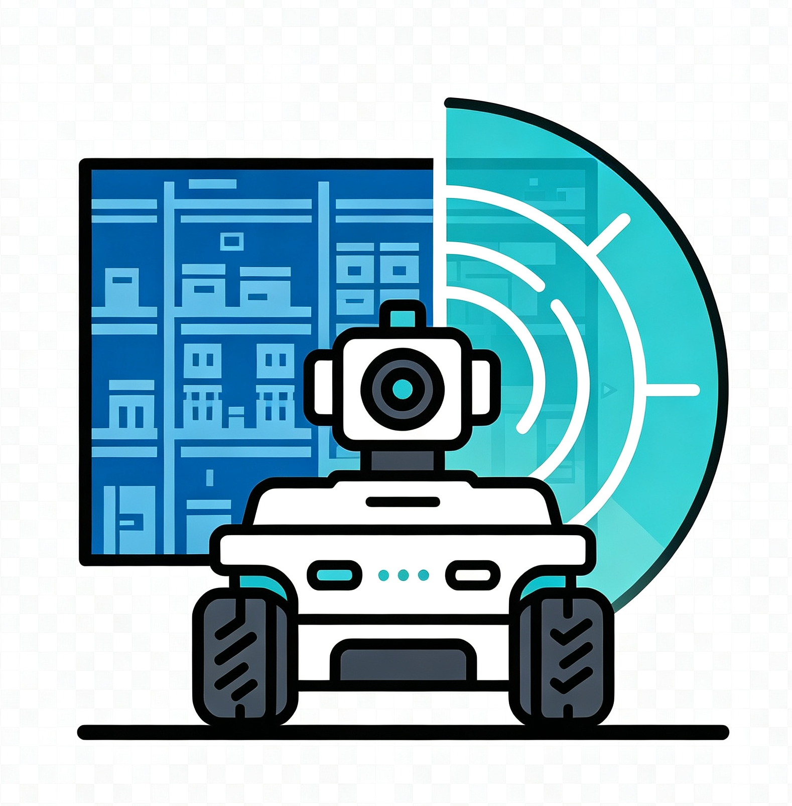
最终答辩 · 线下展示 · 10-15 分钟面向仓储、通道与管廊等狭域场景，完成小车远程控制、巡检监控、环境感知、雷达通道判定、视觉异常识别、告警记录与 AI 辅助分析的一体化应用。
来自课程安排截图：每组展示 10-15 分钟，提问 5 分钟，按分组顺序答辩；所有组员需到场发言。
以课程节点倒推任务，先保证可演示闭环，再补齐告警、AI 和文档测试材料。
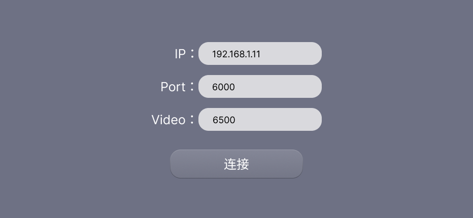
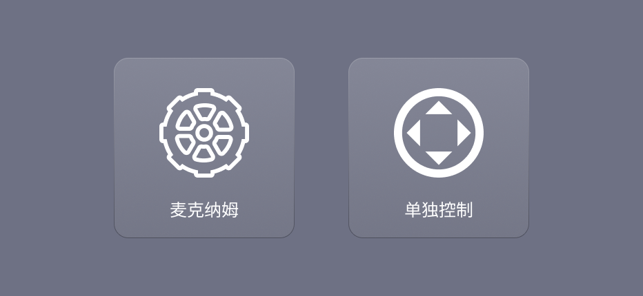
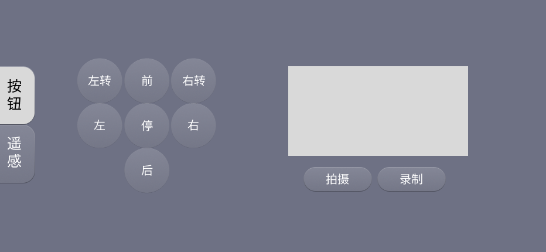
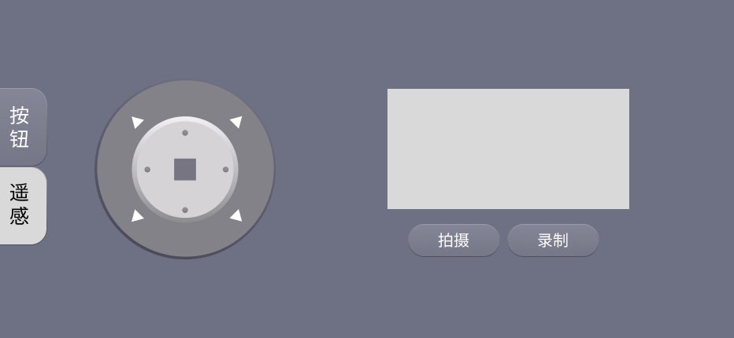
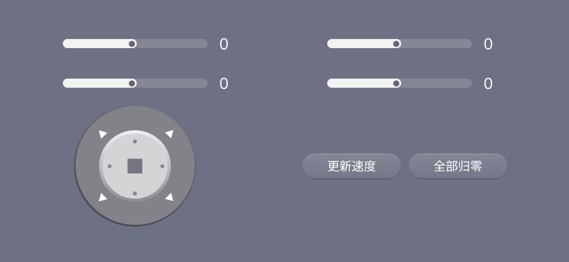
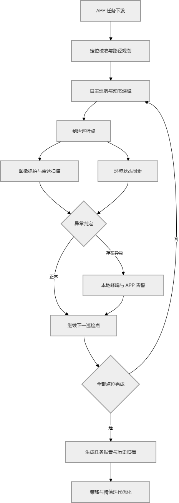
中期材料中出现的成员与模块包括：项目统筹 / SLAM 导航、环境感知 / 鸿蒙 APP、雷达避障、视觉 AI。最终答辩可按实际姓名再替换细节。
小车端围绕仓储狭窄通道设计雷达检测逻辑，重点处理前方通道、左右货架距离、动态障碍和警戒区域四类问题。
APP 端把雷达场景预设、通道安全阈值、告警记录和 AI 分析放到同一条演示链路中，形成可展示、可追溯、可解释的异常处理流程。
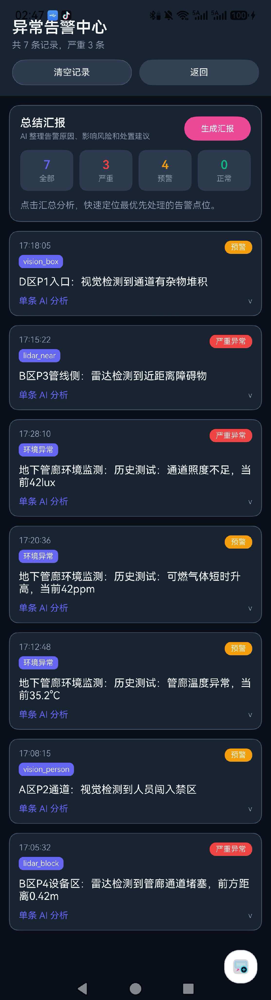
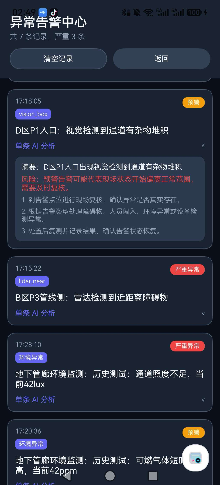
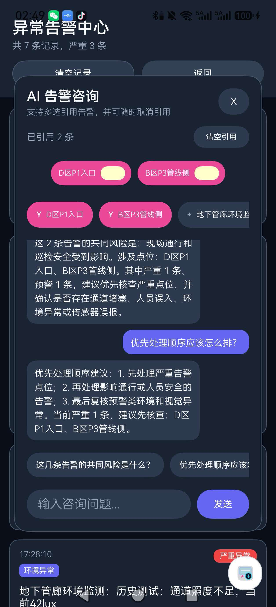
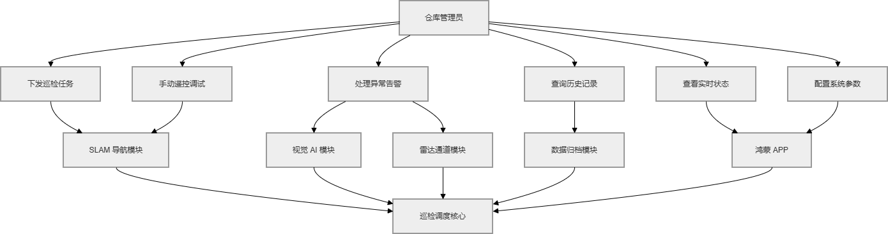